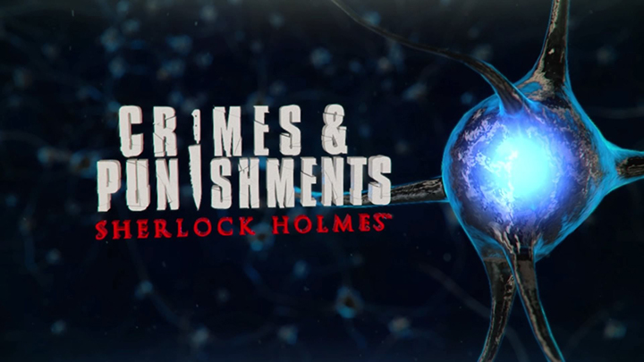
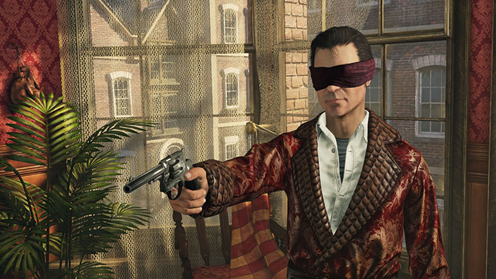
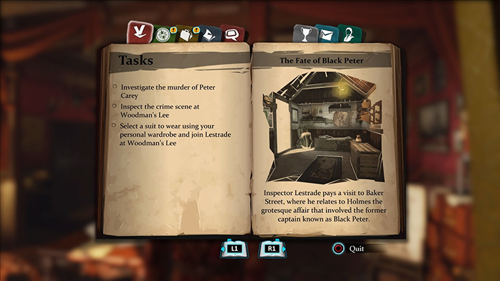
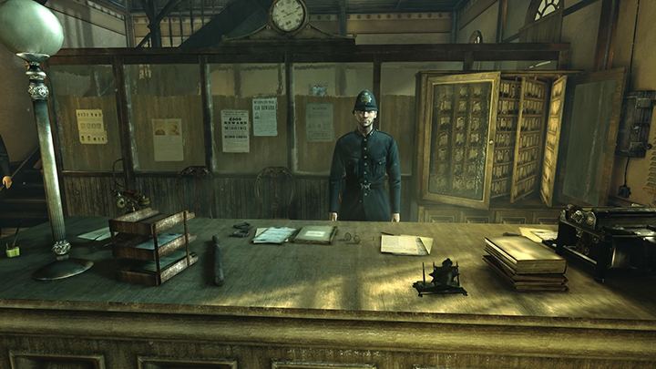

Crimes and Punishments: Sherlock Holmes

Publishing Info
- Published by: Focus Home Interactive SAS
- Developed by: Frogwares Game Development Studio
- Released: Sep 30, 2014
Description
In Crimes & Punishments: Sherlock Holmes, the player controls the fictional detective Sherlock Holmes. The game is set in the late 19th century and, in contrast to the predecessors, tells not one big case but six smaller, independent ones. Three of them are original stories and two (The Fate of Black Peter and The Abbey Grange Affair) are based on Sherlock Holmes stories by Arthur Conan Doyle. The Riddle on the Rails takes the basic premise of Doyle's story The Lost Train, but the rest of the story is original. All cases involve Holmes investigating a murder. [...]
Game Categories
- Genre:
- Action
- Perspective
- 1st-person, 3rd-person (other)
- Gampeplay:
- Puzzle Elements
- Narrative
- Detective/Mystery
Quote
The sound and graphics should take a back seat here, because there is something fun about piecing together clues and solving mysteries. Sherlock Holmes: Crimes and Punishments puts you in the role of a puzzle-solving detective. If you enjoy mysteries, mini games, or puzzles this is for you. I was honestly not expecting much from this game, but I am really glad I was able to play it. -- MobyGames